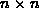
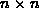
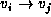
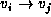
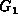
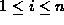
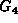
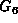

Data Structures and Algorithms
with Object-Oriented Design Patterns in Java
Data Structures and Algorithms
with Object-Oriented Design Patterns in Java
Consider a directed graph  with n vertices,
.
The simplest graph representation scheme
uses an  matrix A of zeroes and ones given by
with n vertices,
.
The simplest graph representation scheme
uses an  matrix A of zeroes and ones given by
That is, the  element of the matrix,
is a one only if  is an edge in G.
The matrix A is called an
adjacency matrix .
element of the matrix,
is a one only if  is an edge in G.
The matrix A is called an
adjacency matrix .
For example, the adjacency matrix for graph  in Figure  is
is
Clearly, the number of ones in the adjacency matrix is equal to the number of edges in the graph.
One advantage of using an adjacency matrix is that it is easy to
determine the sets of edges emanating from a given vertex.
For example, consider vertex  .
Each one in the
.
Each one in the  row corresponds to an edge
that emanates from vertex
row corresponds to an edge
that emanates from vertex  .
Conversely, each one in the
.
Conversely, each one in the  column
corresponds to an edge incident on vertex
column
corresponds to an edge incident on vertex  .
.
We can also use adjacency matrices to represent undirected graphs.
That is, we represent an undirected graph  with n vertices,
using an matrix A of zeroes and ones given by
with n vertices,
using an matrix A of zeroes and ones given by
Since the two sets and are equivalent, matrix A is symmetric about the diagonal. That is, . Furthermore, all of the entries on the diagonal are zero. That is, for .
For example, the adjacency matrix for graph  in Figure is
In this case, there are twice as many ones in the adjacency matrix as there are edges in the undirected graph.
A simple variation allows us to use an adjacency matrix
to represent an edge-labeled graph.
For example, given numeric edge labels,
we can represent a graph (directed or undirected)
using an matrix A in which the  is the numeric label associated with edge
in the case of a directed graph,
and edge ,
in an undirected graph.
is the numeric label associated with edge
in the case of a directed graph,
and edge ,
in an undirected graph.
For example, the adjacency matrix for the graph  in Figure is
In this case, the array entries corresponding to non-existent edges
have all been set to  .
Here
.
Here  serves as a kind of sentinel .
The value to use for the sentinel depends on the application.
For example, if the edges represent routes between geographic locations,
then a route of length
serves as a kind of sentinel .
The value to use for the sentinel depends on the application.
For example, if the edges represent routes between geographic locations,
then a route of length  is much like one that does not exist.
is much like one that does not exist.
Since the adjacency matrix has  entries,
the amount of spaced needed to represent the edges of
a graph is
entries,
the amount of spaced needed to represent the edges of
a graph is  ,
regardless of the actual number of edges in the graph.
If the graph contains relatively few edges,
e.g., if ,
then most of the elements of the adjacency matrix will be zero (or
,
regardless of the actual number of edges in the graph.
If the graph contains relatively few edges,
e.g., if ,
then most of the elements of the adjacency matrix will be zero (or  ).
A matrix in which most of the elements are zero (or
).
A matrix in which most of the elements are zero (or  )
is a sparse matrix .
)
is a sparse matrix .
 Copyright © 1998 by Bruno R. Preiss, P.Eng. All rights reserved.
Copyright © 1998 by Bruno R. Preiss, P.Eng. All rights reserved.